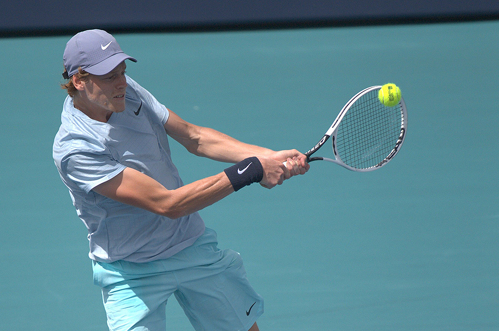
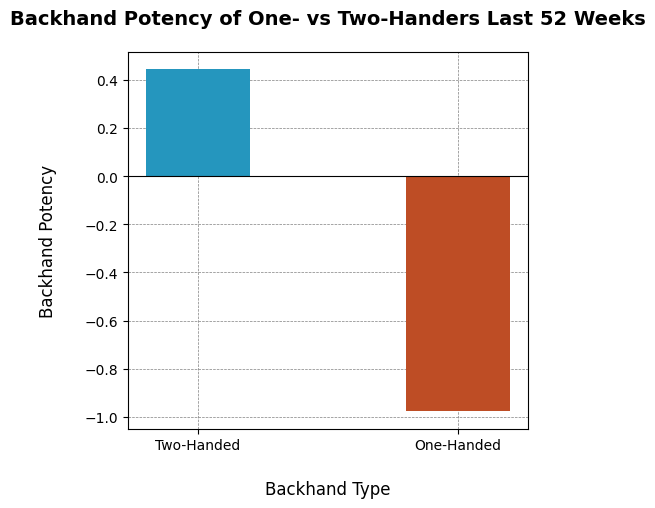
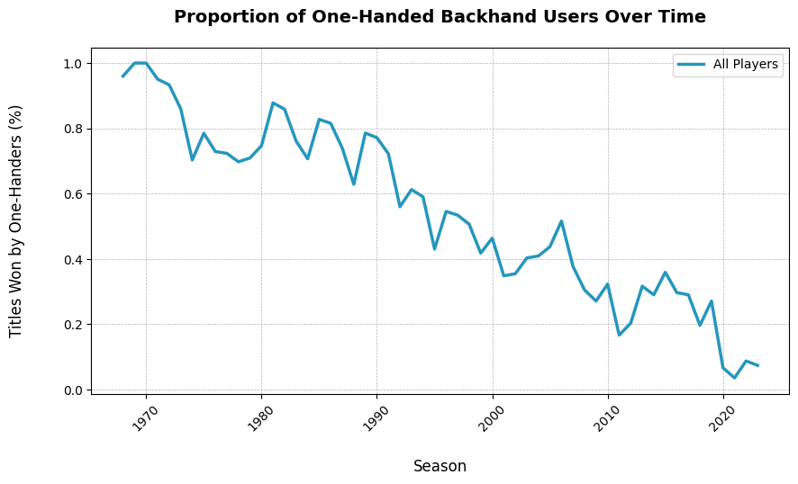
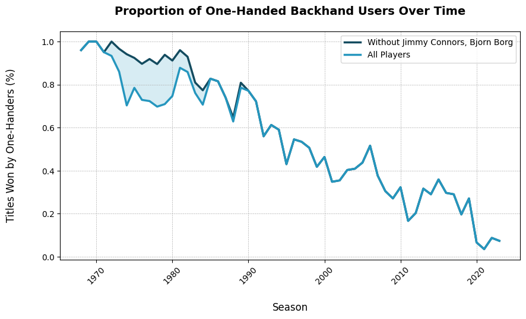
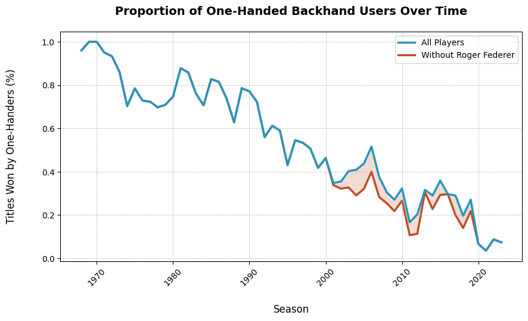
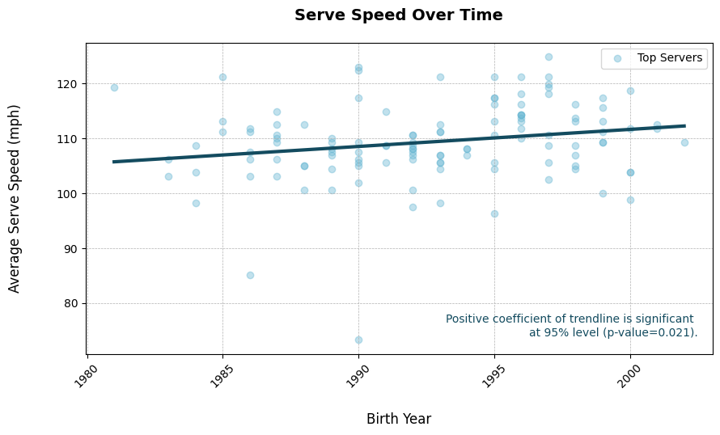
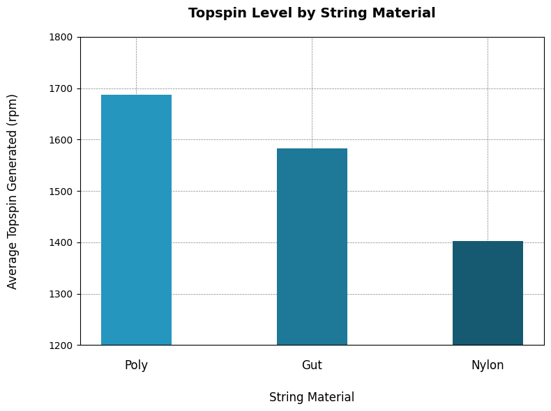

One-Handed Backhands: Endangered but not Extinct
By Natalie Brewer | May 17, 2024

In 2023, Stefanos Tsitsipas reached a career milestone as an Australian Open finalist. Just one year later, he failed to advance past the fourth round of the same tournament. Following a 4-set loss against Taylor Fritz, he dropped down to 10th in the rankings. A week thereafter, Fritz made his way to the finals in Delray Beach and Alex De Minaur to those in Rotterdam. They stepped into the 9th and 10th ranking slots, and Tsitsipas was downgraded to 11th place.
Amidst the murmurs of dissatisfaction with the Greek’s out-of-form hard court performances came a deluge of headlines about something else–something the tennis community had never seen before.
For the first time ever, there was not a single player in the top ten who used a one-handed backhand.
Beauty and the Beast
For those new to the mechanics of hitting a backhand in tennis, there are three primary techniques: the slice, the one-hander, and the two-hander. While the slice backhand is universally executed with one hand and involves imparting backspin on the ball, the focus here will be on the latter two techniques, which are used to generate topspin. The key difference between them lies in the number of hands used to grip the racket.
The two-handed backhand utilizes a continental grip, harnessing power generated from the whole body and channeling it through both arms. The shot proves effective at creating lethal amounts of depth and spin from any height and position on the court–hence our ‘Beast’. Players like Novak Djokovic and Jannik Sinner demonstrate its versatility and reliability.
Conversely, the one-handed backhand—our 'Beauty'—requires an eastern grip and is celebrated for its elegance and power. When the ball is struck in the correct location, it is a singularly beautiful and balanced demonstration of athleticism and control, requiring more wrist coordination than the two-hander. Wawrinka, Gasquet, and Federer are just a few of the legends who exemplify this motion.
From the conception of tennis, virtually all players used the single-hander. It wasn’t until the mid-seventies that the status-quo was even questioned. Only when big trophies started going to the likes of Jimmy Connors and Björn Borg, did people begin to consider that the unconventional shot might have some potential.
Today, we find that one-hander potency is lagging very far behind backhand potency for the past 52-weeks if we compare tour-wide averages.
Measuring a Shot in Decline
Though discussed anecdotally for years, the fall of the one-handed backhand has never been precisely quantified on a tour-wide level.
To accomplish this task, I leveraged the Jeff Sackmann Tennis Database, which boasts the most complete downloadable dataset for active and retired ATP players. It lacks information on backhand preference, which hints at why this project has yet to be attempted. This also points to a greater issue in tennis analytics regarding data accessibility, an area where we lag considerably behind other sports.
Fortunately, the ATP tour website and Wikipedia both store this information in their player profile pages. Thus, by employing the BeautifulSoup package for Python, I was able to access and extract the backhand preference variable from the HTML content of nearly 2000 athletes’ player profiles. Correlating this information with historical data on title winners from Ultimate Tennis Statistics, I charted the decline of the one-handed backhand. The result is below:
There are some important drop-offs to take note of. In 1974 Jimmy Connors won Wimbledon with his two-hander, making him the first man in history to do so. Beginning in 1976, Björn Borg and his two-hander won the same title five times back to back (Steinberger, 2014). Their success throughout the tour contributed significantly to the rise of the two-hander. We can play around with the graph to see just how much these two players contributed to the fall of the one-hander:
Another pivotal era was the new millennium. As shown below, Roger Federer contributed significantly to a brief comeback for the one-hander, bringing the percentage of titles won as high as 50% in 2005. As he slowed down in the late 2010s, other users of the one-hander like Wawrinka, Thiem, and Dimitrov also did their part to slow the decline.
Reasons for the Fall
There are a few popular reasons cited for the tour-wide decline of this once dominant shot.
Claim One: The one-handed backhand can’t keep up with the pace of the modern game.
This claim surfaces from the fact that the single-hander and the two-hander have inherent differences between their strike zones. Whereas a two-hander can effectively scoop low balls from the court, hit over the top of shoulder level balls, and catch fast balls from further back, the single-hander lacks this level of versatility (Mills, 2016). As soon as the ball is not in a low, out-front zone, the one-hander sees a dip in potency.
Whether or not the ball ends up in this zone depends on the opponent's shot; balls hit with high velocity and a massive amount of topspin jump up and out of the one-hander’s ideal zone. Consider Rafael Nadal, whose record-breaking spin levels consistently proved to be kryptonite for Federer’s one-handed backhand (Cambers & Graf, 2022). Unfortunately for players who use the one-hander, there is considerable evidence that tennis features more and more of these shots.
Since data on groundstroke velocity is lacking, we use serve velocity as a proxy to demonstrate the increasing pace of tennis:
We can also credit technological advancements for increasing topspin levels. When Gustavo Kuerten won the French Open in 1997 with his new and experimental Luxilon polyester strings, he rang in a whole new era of tennis tech (Tignor, 2015). The rise of Poly strings meant that players could achieve more spin than ever:
Claim Two: Coaches lack the patience to teach children single-handed backhands.
This claim explores the decision-making process in coaching young tennis players to choose between a one-handed or two-handed backhand. It suggests that in junior tennis, where winning is highly prioritized, coaches may favor quicker results over the prolonged developmental phase required to master the one-handed backhand (Mills, 2016). Because the two-hander requires less wrist strength and coordination, it is easier for children to quickly master. Coaches and players seeking early sponsorships and junior titles are reluctant to sacrifice short-term results for the steep learning curve of the single-hander. This is a pragmatic choice, considering the limited evidence of the one-hander’s superiority in modern tennis.
Will the One-Hander ever go Extinct?
Last Thursday, Grigor Dimitrov stunned fans everywhere as he defeated an in-form Carlos Alcaraz in the Miami Open quarter finals. Coming off of a fresh victory in Indian Wells, Alcaraz was a strong candidate for winning the Sunshine Double, a dream that Dimitrov dismantled in one and a half hours and two sets. The Bulgarian continued his performance all the way to the finals, highlighted by his flawless one-handed backhand, the shot that earned him the nickname “Baby Fed”.
Dimitrov’s run in Miami propelled him back in the top ten for the first time since 2018, and just as quickly as the headlines about the death of the one-hander had come out, were they replaced with those about its triumphant resurgence. Everyone is looking for answers: can the one-hander really die?
Having witnessed in-person the grace and strength of Dimitrov’s backhand a few times myself, I can’t help but think that perhaps the future of the one-hander is not a story about statistics or data. Perhaps, it is simply about those profound moments of unquantifiable athleticism–like when young players see their idols hit a perfect one-hander on TV and are inspired to emulate them. So as long as players like Federer, Dimitrov and Tsitsipas are keeping the shot alive, it's hard to imagine that the one-hander will ever truly go extinct.
References